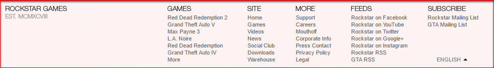
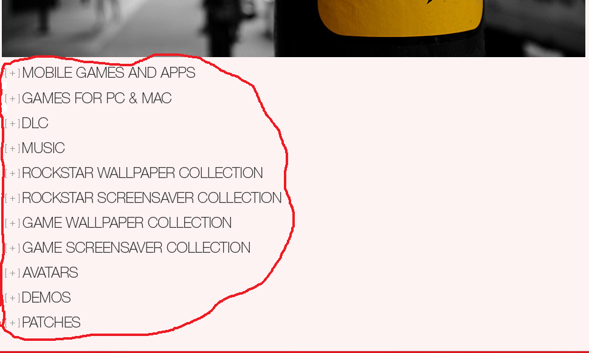
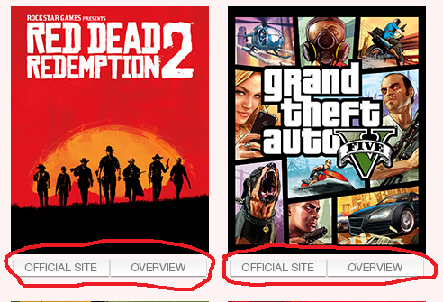

The navigation in the rockstargames.com work in one way, by using top part, it is part called as the navigation part or the menu bar. The menu bar contain hyperlinks to other pages, which play the role of buttons.
The menu bar realized by using unordered list ( <ul> and <li> tags). This list stored into <nav> which also stored at <div> container which makes it easily to customize and maintain in future. All buttons links on web-pages, exclude social club and warehouse pages. They are linked in other rockstargames web-sites. Above the buttons, placed site name and sites, where are placed main rockstargames studious. Under the buttons, placed the phrase, which changed automatically after some minutes, it used by Jquery scripts. All of these elements used as decorative. The web site does not have home button, and it makes so difficult to navigate between pages. When I used web site for this critique, I need to used back button in web browser many times because after going to any page, you can not go back home, and need only use menu bar, which also do not have home button. It is serious disadvantage.
The menu bar also has search button, which links to special search page. This page can make search for GAMES, VIDEOS and NEWSWIRE pages. These buttons have interesting Jquery script, which shows the small search bar, when the mouse cursor placed on search button. The visitor also can type into this bar, which will show him quick search on pages.
The WAREHOUSE and SUPPORT pages have their own searches, which work only on their pages. Body section of most pages have sorting filters, which help to fast navigate, because pages have huge number of content in every pages. It is realized by JQuery and CSS file. Also pages have links like page numbers, which will be link to needed page.
At the bottom of the page, placed another navigation bar, which stores support and privacy information. It is structure look like similar to menu bar, it has hyperlink stored in unordered list. This bar includes many link and it looks like little bit overloaded. 
The Language section field placed at the bottom and in right side, it is not standard method of realization of this element. Usually, web sites have this section at the top right section. It is also realised with unorderd list which get data from JavaScript array which store five different languages.
The downlad page has interesting navigation elements. It contains div elements, which stores images of categories. All these elements together looks like diferent categories and user can expand or hide this categories. It make this page so organized, but actually this is page which has biggest number of content.

Also in game section, under each game, the we-site developers inserted two hyperlinks to game web-site and to preveiw which can be also in diferent pages. This step let visitors get easier acess to know information about game, but users do not need to search it or make new web browser tab to go on game or review sites. The visitors have easiest and fast access to it.
